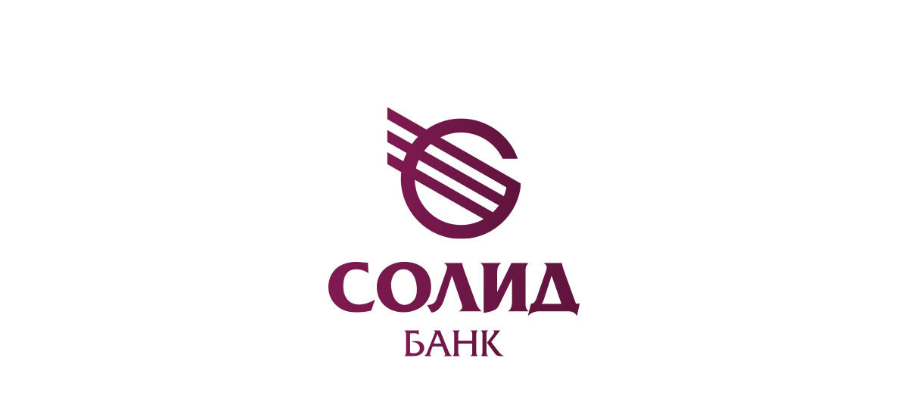

О компании АО Солид Банк
Направления деятельности
АО «Солид Банк» — это универсальное финансово-кредитное учреждение, предоставляющее обширный пакет банковских услуг, обслуживающее индивидуальных и корпоративных клиентов различных форм собственности и видов деятельности. Официальный сайт 
История компании
Солид Банк отсчитывает свою историю с 1991 года, с момента преобразования Жилсоцбанка в новую банковскую единицу – «Камчатский коммерческий банк содействия предпринимательству», с мая 1996 года – в ЗАО «Камчатбизнесбанк». Решением собрания акционеров 07.02.2004 года банк переименован в ЗАО «Солид Банк».
Во исполнение Федерального закона от 05.05.2014 N 99-ФЗ «О внесении изменений в главу 4 части первой Гражданского кодекса Российской Федерации и о признании утратившими силу отдельных положений законодательных актов Российской Федерации» приведено в соответствие наименование организационно-правовой формы Банка, и 18 ноября 2015 года получена лицензия Банка России с новым наименованием - Акционерное общество «Солид Банк».
С 3 июля 2017 г. Головной офис АО «Солид Банк» располагается в г. Владивостоке. Всего банк присутствует в 17 городах в Приморском, Хабаровском, Камчатском, Красноярском крае, Амурской, Сахалинской, Иркутской области, в республике Саха (Якутия) и в городах, относящихся к Московскому филиалу: Москва, Екатеринбург, Санкт-Петербург, Альметьевск, Уфа, Ижевск, Казань, Тула.
Достижения
27.11.2023 г. рейтинговое агентство «Эксперт РА» повысило рейтинг кредитоспособности АО «Солид Банк» до уровня «ruBB-», прогноз по рейтингу «стабильный».
18.03.2024 г. рейтинговое агентство «НРА» присвоило банку кредитный рейтинг на уровне «ВВ-|ru|» по национальной
рейтинговой шкале для Российской Федерации, прогноз по рейтингу «стабильный».
Банк является участником системы обязательного страхования вкладов, членом Ассоциации банков России (Ассоциация «Россия»), Дальневосточной торгово-промышленная палаты, СРО «Национальная финансовая организация», СРО «Национальная фондовая ассоциация», фондовой секции ПАО «Московская биржа ММВБ-РТС», валютной секции ПАО «Московская биржа ММВБ-РТС», Российско-Китайского финансового совета, Московской международной валютной ассоциации.